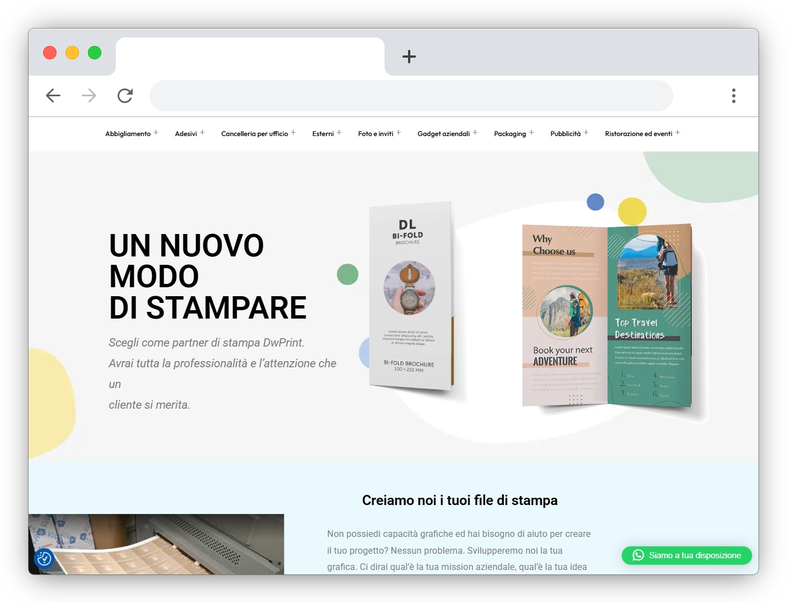

Siti web
su misura
Realizzo siti web professionali per aziende, attività e professionisti che vogliono presentarsi online in modo chiaro, moderno e credibile.
Ogni progetto viene costruito intorno alla tua identità, ai tuoi contenuti e agli obiettivi reali del sito: raccontare un’attività, ricevere contatti, vendere prodotti, promuovere un servizio o creare una presenza digitale più ordinata e riconoscibile.

Tipologie di sito
Ogni sito ha una funzione diversa. Per questo scelgo struttura, numero di pagine e stile in base a ciò che deve comunicare e al tipo di risultato che vuoi ottenere.
Landing page
Una pagina singola pensata per un obiettivo preciso: presentare un servizio, promuovere un prodotto, raccogliere richieste o portare l’utente a compiere un’azione. È diretta, essenziale e costruita per guidare la navigazione senza distrazioni.
Sito vetrina
La soluzione ideale per raccontare un’attività, mostrare servizi, presentare il team e offrire un punto di contatto chiaro. È adatto a professionisti, aziende, studi, negozi e attività locali che vogliono essere trovati online con un’immagine curata.
Sito multi-pagina
Una struttura più completa per chi ha diversi servizi, aree informative, articoli, sezioni dedicate o contenuti da organizzare con maggiore profondità. È indicato per realtà più articolate che hanno bisogno di una presenza online solida e ben distribuita.
One-page
Un sito compatto in un’unica pagina a scorrimento, perfetto per portfolio, eventi, progetti personali, lanci di prodotto o presentazioni snelle. Funziona bene quando il messaggio deve arrivare in modo rapido, visivo e immediato.
E-commerce
Un negozio online per vendere prodotti, gestire catalogo, varianti, carrello, checkout e pagamenti. Lo progetto con attenzione alla navigazione, alla chiarezza delle schede prodotto e all’esperienza d’acquisto.
Come lavoro
Un sito efficace nasce da un processo ordinato. Prima capisco cosa ti serve davvero, poi definisco struttura, contenuti, stile e funzionalità, così ogni fase è chiara fin dall’inizio.
Brief
Analizziamo insieme obiettivi, pubblico, contenuti, riferimenti visivi e funzionalità necessarie. Da questa fase nasce una proposta chiara, con tempi e direzione del progetto.
Design
Creo una struttura visiva coerente con la tua attività, lavorando su layout, gerarchia dei contenuti, leggibilità e navigazione. Il sito deve essere bello, ma soprattutto chiaro e semplice da usare.
Sviluppo
Una volta definita la direzione grafica, passo alla realizzazione tecnica. Il sito viene costruito per funzionare correttamente su desktop, tablet e smartphone, con attenzione a velocità, ordine e stabilità.
Online
Dopo i test finali, il sito viene pubblicato sul dominio scelto. Posso aiutarti anche con configurazioni tecniche, controlli finali e piccoli interventi dopo la messa online.
Cosa è incluso
Ogni sito viene consegnato completo, funzionante e pronto per essere utilizzato. L’obiettivo è darti uno strumento chiaro, curato e realmente utile per la tua attività.
Tecnologie e gestione
La scelta tecnica dipende dal tipo di sito, dal budget, dalla gestione futura e dal livello di autonomia che vuoi avere dopo la consegna.
Con cosa lo costruisco
Per siti statici, landing page e progetti molto personalizzati posso lavorare con HTML, CSS e JavaScript. Per siti aggiornabili, blog, pagine servizi ed e-commerce, posso utilizzare WordPress o altre soluzioni adatte al progetto, scegliendo la strada più semplice, stabile e coerente con le tue esigenze.
Sito chiavi in mano
Posso seguire l’intero processo: struttura del sito, impostazione grafica, sviluppo delle pagine, configurazione dei moduli di contatto, collegamenti principali e controlli finali prima della pubblicazione. L’obiettivo è consegnarti un sito completo, funzionante e pronto per essere utilizzato.
Manutenzione e aggiornamenti
Dopo la pubblicazione posso occuparmi anche della manutenzione del sito, degli aggiornamenti periodici, di piccole modifiche ai contenuti e del controllo generale del corretto funzionamento. In questo modo il sito non resta abbandonato dopo la consegna, ma può essere seguito e migliorato nel tempo.
Alcuni esempi del mio lavoro
Una selezione di siti, landing page ed esperienze web create per mostrare approccio visivo, struttura, navigazione e possibilità progettuali.
Ferro & Lama
Esempio di landing page per un barbiere, con stile deciso, servizi essenziali e invito alla prenotazione in primo piano. Il progetto mostra come una pagina singola può comunicare identità, atmosfera e informazioni utili in modo rapido.
Apri l’esempio ↗Francesca Ferlauto
Esempio di sito vetrina per wedding planner, con layout elegante, sezione portfolio, testimonianze e modulo di contatto. Il progetto lavora su tono romantico, ordine visivo e chiarezza delle informazioni.
Apri l’esempio ↗The Rusty Clover
Esempio di sito per pub irlandese, con atmosfera scura, immagini protagoniste, menù ed eventi ben organizzati. Il progetto mostra come trasformare l’identità di un locale in una presenza online riconoscibile.
Apri l’esempio ↗Elena Voss
Esempio di portfolio fotografico minimal, costruito per lasciare spazio alle immagini. Tipografia leggera, navigazione semplice e layout pulito aiutano a valorizzare il lavoro visivo senza distrazioni.
Apri l’esempio ↗FitPulse
Esempio di landing page per app fitness, progettata per presentare funzionalità, vantaggi e call to action in modo diretto. La struttura guida l’utente verso il download con sezioni brevi e chiare.
Apri l’esempio ↗DRIP.
Esempio di sito e-commerce per un brand streetwear, con catalogo, varianti prodotto, carrello e checkout. Il progetto mostra un flusso di acquisto completo, dalla scoperta del prodotto alla conferma d’ordine.
Apri l’esempio ↗